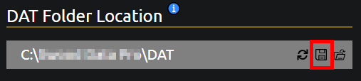
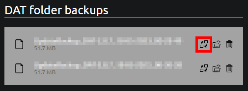

Creating Backups
Overview
The
How to Create a Backup
To create a backup of your current

How to Restore a Backup
To restore a backed up
Please make sure to restart SolidWorks after restoring a backup.

The
To create a backup of your current

To restore a backed up
Please make sure to restart SolidWorks after restoring a backup.
